Welcome to The Green House
Here you will find a wide selection of plants and flowers to liven up and decorate your home and garden.
Why love plants?
- Reduce stress levels
- Improve concentration
- Purify and keep the air clean
- They are a good home decoration
- Enhance the feeling of well being
Visit Us
12 Green Street, Dublin
Schedule
| Monday - Friday: | 12 AM - 8 PM |
| Saturday: | 11 AM - 6 PM |
| Sunday: | Closed |
Plant Catalogue
Sedum
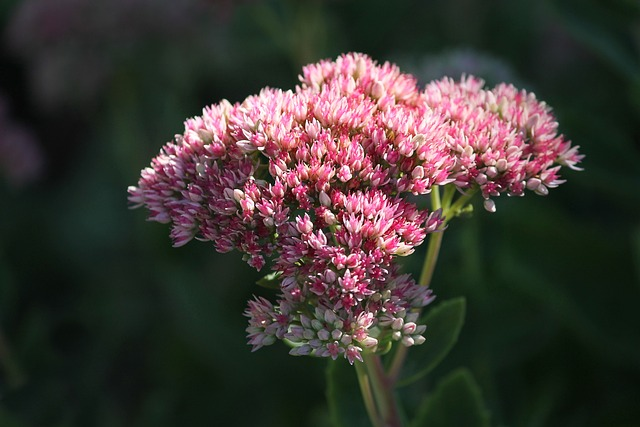Sedums are succulent plants with fleshy leaves and flat, nectar-rich flowerheads that are loved by bees and other pollinators. They are drought-tolerant and can be grown in a sunny spot with well-drained soil.
Care:
- Light: At least six hours of direct sunlight on most days.
- Water: Once a week during the first year.
- Soil: A loose loamy, sandy, or gravelly soil with sharp drainage.
Echeveria
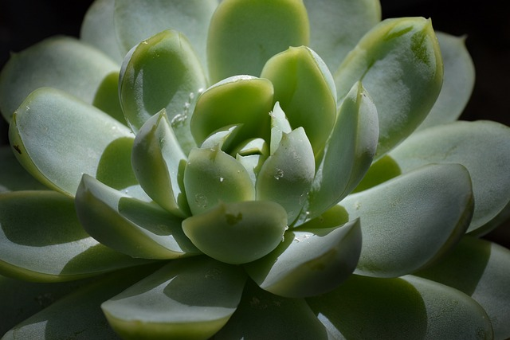Echeverias are rose-shaped succulents that are easy to care for, drought-resistant, and come in a beautiful variety of colors and sizes. The plant flowers readily (mostly coral-pink, yellow-tipped, or reddish-orange blooms) and grows quickly compared to other succulents.
Care:
- Light: At least 6 hours of filtered or direct exposure per day.
- Water: Only when the soil has dried out
- Soil: A sandy, well-draining soil
Sansevieria
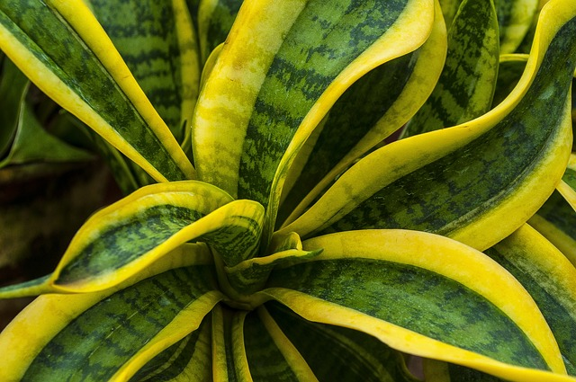Snake plant (Sansevieria) is a striking house plant, with sword-like leaves. Its pointed leaves have given it the nickname mother-in-law's tongue. There are several different varieties, all with slightly different shapes and leaf colours.
Care:
- Light: Out of direct light.
- Water: Whenever the soil is dry.
- Soil: A soil that can drain out enough water
Pothos
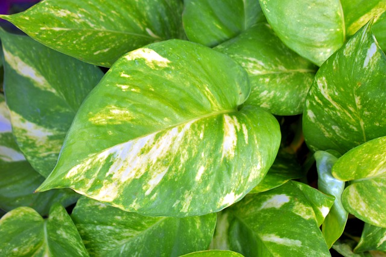Pothos is an evergreen plant with thick, waxy, green, heart-shaped leaves with splashes of yellow. As a houseplant, it is commonly grown as a hanging plant.
Care:
- Light: Can tolerate low light conditions, out of direct sunlight
- Water: Requires water and grows best during spring and summer when the soil is kept consistently moist.
- Soil: A loamy or sandy soil will work.
Ficus elastica
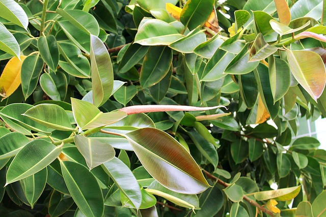The rubber plant, Ficus elastica, is named after the rubbery white latex that runs through its stems and branches, and which was once used to make rubber. It has wide, glossy leaves.
Care:
- Light: Bright but indirect light
- Water: Only when the top two inches of the compost have dried out
- Soil: Moist but well-drained
Petunia
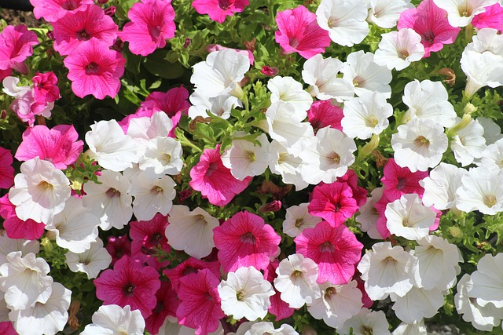Petunias are prolific bloomers, and you can find them in just about every color but true blue. They have wide, trumpet-shaped flowers and branching foliage that is hairy and somewhat sticky.
Care:
- Light: At least six hours of direct sunlight on most days.
- Water: Tt's sufficient to soak beds weekly with 1 to 2 inches of water when you don't have rainfall.
- Soil: Well-drained and moist
Mint
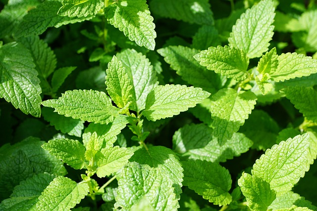Mints have square stems and opposite aromatic leaves. Many can spread vegetatively by stolons and can be aggressive in gardens. The small flowers are usually pale purple, pink, or white in colour and are arranged in clusters, either forming whorls or crowded together in a terminal spike.
Care:
- Light: Part shade, though they will grow in full sun if you water them frequently
- Water: Keep slightly moist, but not soggy.
- Soil: Rich soil with a slightly acidic to neutral pH
Heather
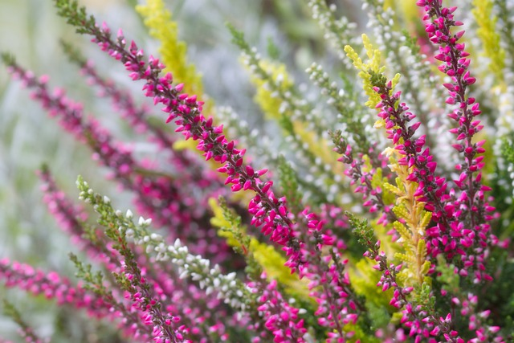Heathers are generally small evergreen shrubs that carpet the ground and produce masses of tiny bell-like blooms, densely packed onto small flower spikes. These come in a choice of colours, from purple to mauve, pink, red and white.
Care:
- Light: This plant prefers lots of sun
- Water: Water the plant frequently, preferably daily, to keep it wet.
- Soil: A well-draining soil that contains sand and peat moss.
Aloe Vera

Aloe vera (or Aloe barbadensis, or Barbados aloe) is an attractive house plant with spiky, fleshy leaves that are serrated at the edges. It's a succulent that hails from hot, arid regions of the world, and stores water in its leaves. It therefore doesn't need much watering, which makes it an excellent, low maintenance plant for beginners.
Care:
- Light: Plenty of indirect light and can take a little sun.
- Water: Water whenever the top few centimetres of compost to dry out between waterings.
- Soil: Multi-purpose compost with some horticultural grit or perlite added.
Cactus
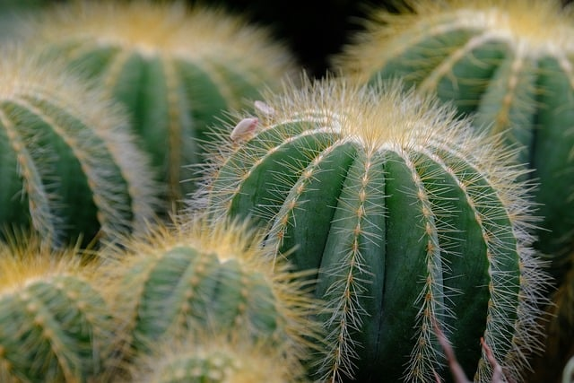Cacti are succulent perennial plants. Cacti generally have thick herbaceous or woody chlorophyll-containing stems. Cacti can be distinguished from other succulent plants by the presence of areoles, small cushionlike structures with trichomes (plant hairs) and, in almost all species, spines or barbed bristles (glochids).
Care:
- Light: Four to six hours of bright sunlight daily.
- Water: Once every four weeks.
- Soil: well-draining soil.
Calathea
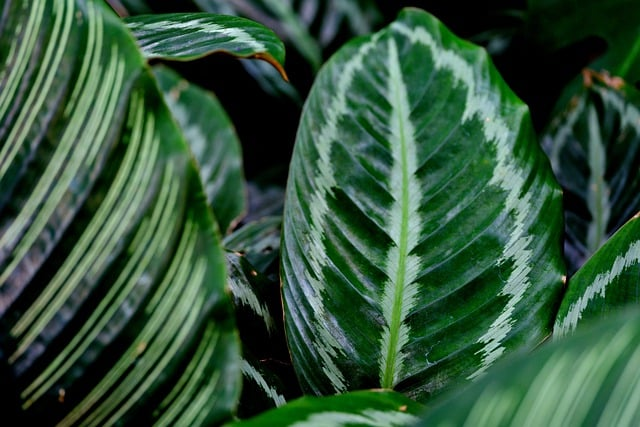The genus Calathea—characterized by boldly marked, oblong leaves in a dazzling array of colors—includes some of the most beautiful tropical plants in the world. Due to the plants' eye-catching stripes and veining, they're often known by nicknames such as the zebra plant, peacock plant, or rattlesnake plant. Calatheas are also referred to as prayer plants, a common name that other species use as well.
Care:
- Light: keep your calathea out of direct sun.
- Water: Water regularly to maintain consistently moist (but not soggy) soil.
- Soil: A loamy or humusy soil that's rich in organic matter.
Pilea peperomioides
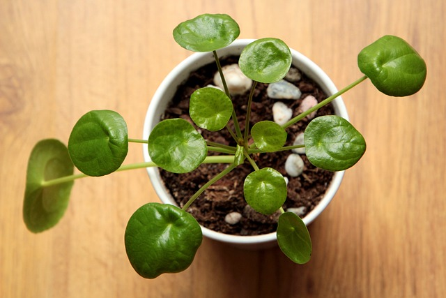Pilea peperomioides, often referred to as the pancake plant, Chinese money plant, coin plant, or UFO plant, is a popular houseplant thanks to its attractive coin-shaped foliage and ease of care. This flowering perennial in the nettle family (Urticaceae) is native to southern China, growing naturally along the base of the Himalayan mountains.
Care:
- Light: The Pilea peperomioides thrives in medium to bright indirect light.
- Water: Allow the plant to nearly dry out between waterings and then water well.
- Soil: Rich, well-draining soil.